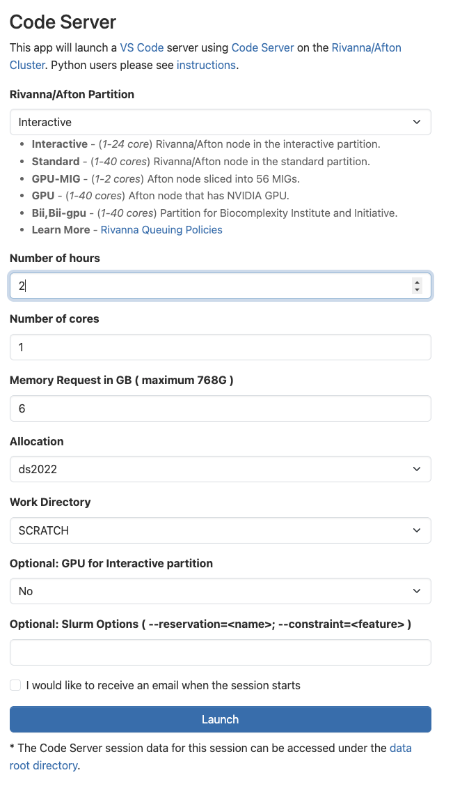
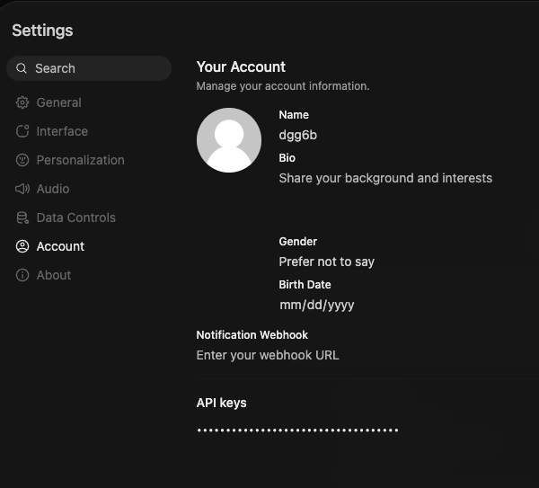

microagent — guided walkthrough
A 90-line ReAct agent, taken apart and rebuilt in front of you.
Every agent framework you'll meet in industry — LangChain, LlamaIndex, OpenAI Assistants, Anthropic's computer_use, AutoGen — is a wrapper over the same 90 lines. Understanding what those 90 lines actually do (and don't do) is the precondition for both building useful agents and attacking ones that aren't yours. This lab gives you that grounding. Lab 05 then uses it to attack a near-identical agent.
The whole agent is one Python file: a system prompt, one tool, two LLM clients (one canned-toy, one real), one ReAct loop, and a CLI. Run it once in toy mode and you have run the entire loop offline — no Rivanna credentials, no internet — and watched every action and every observation print as it goes. Once the loop makes sense in 90 lines, the only thing that changes in the 200-line production version is the surface area: FastAPI replaces input(), three tools replace one, two filters wrap the IO, and a SQLite-backed knowledge base joins the context. The loop is the same loop.
Short questions appear throughout the lab in boxes like this one. They mirror the kind of question that will show up on the midterm and final, so take a beat to answer them in your head (or out loud with a partner) before clicking Show answer. There are six in total.
You'll run everything in this lab — the toy agent, the real-model runs, and your assignment — inside a Code Server session on Rivanna. Open Open OnDemand → Interactive Apps → Code Server and launch it with these settings (no GPU needed — the agent just calls the remote model):
- Rivanna/Afton Partition: Interactive
- Number of hours: 2 · Number of cores: 1 · Memory: 6 GB
- Allocation: your class allocation
- Work Directory:
/scratch/$USER(not home) - GPU for Interactive partition: No
When the session shows Running, click Connect to Code Server, then open a terminal (Terminal → New Terminal). Every command in this lab runs in that terminal.

python microagent.py --toy prints to your terminal — no API, no network.
The whole agent is the dance between those two panels. The LLM looks at the context, emits an action, the runtime executes the action, the result appends to the context. Repeat until the LLM emits {"action": "final"}. There is no other machinery.
Where to find it
- microagent source —
agent/microagent.pyin this lab folder. Read it top to bottom; that's the whole agent. ↓ download lab-04-code.zip - toy knowledge base —
agent/microdata/. Three tiny markdown files the agent's one tool can read. - production agent (walked in Lab 05) —
../lab-05/agent/baseline_agent.py. Same loop, more surface. Lab 05 §2 walks it block by block, then attacks it. - companion walkthrough — Lab 02 · microGPT. Same pedagogy, applied to a transformer instead of an agent.
- next lab · the attacks — Lab 05 · Attacking AI Agents. Three canonical attacks against an agent shaped exactly like the one we walk here.
1 · Anatomy of an agent
An agent is a program that chooses its own next action. A chatbot returns the LLM's reply directly; an agent treats the LLM's reply as a structured plan, executes that plan, and feeds the result back into the next LLM call. More precisely: an agent receives your message, reasons about what to do, decides which tools to call, executes those tools, observes the results, and either takes another action or responds.
That description names five components — and you can see each of them in microagent.py with a single grep:
LLM core30 lines · ToyLLM or RealLLMsame RealLLM in llm_client.pystreaming Anthropic messages.create()System prompt10 lines · inline string30 lines · loaded from system_prompt.txtmulti-section prompt built at launch + CLAUDE.mdTools1 tool · file_read3 tools · file_search, file_read, config_lookupdozens · Bash, Read, Edit, Grep, Task (sub-agents), WebFetch, …Memoryconversation only (per session)+ SQLite knowledge base read on every /chatconversation context (auto-compacted) + CLAUDE.md memory filesGuardrailsnoneinput keyword filter + output substring filtertool-permission prompts + hooks + model-level refusalsLoop runtimereact() · 15 linessame react_loop() · 25 linessame loop, client-side in the CLI — readable in the leaked sourcereact() loop you're about to build.Looking at the three columns of the table above: which component grows most between microagent and baseline_agent, and which one changes the least? Why?
Show answer
baseline_agent imports the very same RealLLM.chat(messages) you use here, untouched. The loop runtime grows only a little (15 → 25 lines) — a guardrail check and a memory read slotted into the same bounded think → act → observe cycle — so what grows is the surface around the loop, not the cycle itself. That's the structural claim of the lab: more surface, same loop.2 · The microagent code
Open agent/microagent.py in your editor. ↓ download lab-04-code.zip Read along below — every line is here, broken into the six sections you saw in the table. Hover any line for an explanation; the panel updates with the rationale.
2.1 The tool
An agent's tools are the only way it can affect the world. microagent has one: file_read. It is six lines, including the docstring, and it does exactly what it says.
baseline_agent.py exposes three tools (file_search, file_read, config_lookup), all in tools.py, all scoped to one directory. In LangChain, every tool has to be turned into a class with a type-checked schema describing its arguments. In Claude Code, every tool ships a JSON-schema spec the model is shown up front, and the CLI executes it locally behind a permission prompt. There is more setup code in each case, but the actual job each tool does is still the same six lines you just read above.
The tool resolves every path argument relative to microdata/ and refuses to read anything outside it. If we trust the LLM to call its own tool with sensible arguments, why bother with the scoping at all?
Show answer
file_read("/etc/passwd") just as easily as file_read("password_policy.md"). Scoping the tool to a known directory is a structural defense that doesn't depend on the LLM behaving well. Keep an eye on places like this throughout the lab — they are the seams where the next lab's attacks land.When file_read can't find a path it doesn't just say not found — it returns the names of the files that do exist (and the system prompt lists them too). Why go to that trouble instead of a bare error?
Show answer
ls the directory itself; it knows only what the tool hands back. A bare not found leaves it guessing another filename or quitting with an empty answer (exactly the failure you get without this). Naming the available files turns the error into a recovery hint: the next loop iteration reads the right file. The lesson generalizes — in an agent, a tool error is feedback to a model, not a human, so make errors actionable. (Same reason the prompt names the files up front: the model only ever knows what's in its context.)2.2 The system prompt
This is the only "intelligence configuration" the LLM gets. Eleven lines tell it who it is, what one tool it has, and the JSON shape it must respond in.
Everything the LLM "knows" about its own rules is in that string. Anything that gets concatenated next to the system prompt — a user message, a tool observation, a poisoned document — is read with the same trust level. The system prompt has no asterisk on it. As you read the rest of the lab, see how many ways you can imagine to make the agent ignore one of the rules in that string. Some are subtle; some are not.
The system prompt sits in a Python string variable; the user's message arrives over an input() call. From the LLM's point of view, what is the difference between those two strings once they reach the model?
Show answer
2.3 The toy LLM
The agent's "intelligence" is the part that decides which action to emit. We replace it with a dictionary so you can read the entire decision policy in one screen. Three scenarios, two-or-three steps each. Don't worry — we swap this dictionary out for a call to a real LLM (Rivanna's Kimi K2.5) in the next section. Same loop, same interface, just a different chat() method.
class ToyLLM:
"""Canned responses, hand-pinned to scenarios. No API call."""
SCRIPTS = {
"how do i reset my password": [
{"action": "file_read", "args": {"path": "password_policy.md"}},
{"action": "final", "answer":
"Visit https://password.megacorpone.local. Locked out? Ext. 4357."},
],
"my wifi keeps dropping": [
{"action": "file_read", "args": {"path": "network_help.md"}},
{"action": "final", "answer":
"Forget the network and rejoin megacorp-corp (not guest). "
"If it keeps dropping, restart NetworkManager."},
],
"hello": [
{"action": "final", "answer": "Hi! Ask me about passwords or wifi."},
],
}
def __init__(self):
self.step = 0
self.script = NoneThe SCRIPTS dictionary is the "intelligence." Each key is a normalized user question; each value is a sequence of {"action": ...} dicts — exactly what a real LLM would emit, hand-pinned. The __init__ seeds two pieces of state: step (which action to return next) and script (which scenario we've locked in for this conversation). Before we discuss the chat() method, let's discuss one Python primitive to call out:
next(...) do?
If you haven't seen next() before, it's the built-in that pulls the next value from any iterator and stops there — useful when you want the first match out of a sequence without writing a full for loop. Three quick examples, then on to the microagent line.
# 1. Plain iterator — next() returns the next item, one at a time.
nums = iter([10, 20, 30])
next(nums) # → 10
next(nums) # → 20
# 2. Generator expression — pull the FIRST value the expression yields.
# Reads left-to-right: "for each x in [...], if x > 1, give me x".
next(x for x in [1, 2, 3] if x > 1) # → 2 (the first match)
# 3. Default value — what to return if the iterator is empty.
next((x for x in [] if x > 0), "no match") # → "no match"
# Without the default, next() raises StopIteration on an empty iterator.Here's the microagent line we're about to hover:
key = next(m["content"] for m in messages if m["role"] == "user")It says: "walk messages; for each message m whose role is "user", give me m["content"]; stop at the first one and assign it to key." Equivalent to this longer version:
key = None
for m in messages:
if m["role"] == "user":
key = m["content"]
breakThe two-line / six-line difference is what makes next() idiomatic Python for "find the first thing in a sequence that matches a condition." It is a common interview-style pattern; worth recognizing in the wild.
With that in your pocket, here's chat() line by line:
Replacing this class with a real LLM client (next subsection) does not change the loop one line. That is the entire point of the abstraction.
SCRIPTS — start there, then try one of your own to see what happens.
The agent's entire "intelligence" is the dictionary above. When you type something the dictionary doesn't know, the toy LLM emits its fallback final action and the loop ends after one step. Swap ToyLLM for RealLLM in the next section and the same code path runs against Kimi K2.5 — same loop, same chat UI, different brain.
2.4 The real LLM
The OpenAI-compatible REST client. Works against UVA Rivanna's Kimi K2.5, against vLLM, against Ollama in OpenAI-mode, against any chat-completions endpoint. The RC GenAI endpoint streams its replies as Server-Sent Events (even for one-shot calls), so chat() stitches the assistant's content deltas back together — and skips Kimi's reasoning deltas, which are its private chain-of-thought.
class RealLLM:
def __init__(self):
import httpx
self.url = os.environ["LLM_BASE_URL"].rstrip("/") + "/chat/completions"
self.key = os.environ["LLM_API_KEY"]
self.model = os.environ["LLM_MODEL"]
self.client = httpx.Client(timeout=120)
def chat(self, messages):
r = self.client.post(self.url,
headers={"Authorization": f"Bearer {self.key}"},
json={"model": self.model, "messages": messages,
"temperature": 0.2, "stream": True})
r.raise_for_status()
out = []
for line in r.text.splitlines(): # Server-Sent Events: "data: {json}"
if not line.startswith("data: "): continue
payload = line[6:].strip()
if payload == "[DONE]": break
try: delta = json.loads(payload)["choices"][0]["delta"]
except (json.JSONDecodeError, KeyError, IndexError): continue
if delta.get("content"): out.append(delta["content"])
return "".join(out).strip()Same chat(messages) → string interface as ToyLLM. The loop calls this exactly the same way — it just reassembles the streamed answer before returning.
.env
The three os.environ[...] calls in the constructor mean the agent expects LLM_BASE_URL, LLM_API_KEY, and LLM_MODEL in the environment. Here is how to get them set:
Step 1 · get your API key from the RC GenAI portal. Open open-webui.rc.virginia.edu and sign in with NetBadge. Click your name → Settings, open the Account tab, and scroll to API keys at the bottom — generate one (or reveal and copy an existing key). That key is your LLM_API_KEY. The portal's model picker also lists the available model identifiers; Kimi K2.5 (model id Kimi K2.5) is what this lab targets.

agent/.env as LLM_API_KEY. Treat it like a password — it's personal and revocable.Step 2 · copy the example file, then open agent/.env in the Code Server editor and paste your token.
$ cd Class/labs/lab-04 $ cp agent/.env.example agent/.env
The file looks like this — replace the placeholder on the second line with the token from the portal:
LLM_BASE_URL=https://open-webui.rc.virginia.edu/api
LLM_API_KEY=replace-with-your-rivanna-genai-token
LLM_MODEL=Kimi K2.5Step 3 · install the dotenv helper so microagent.py picks the file up automatically:
$ pip install python-dotenv httpx
That's it. Run python agent/microagent.py --real in §3.2 below and the agent will read your .env, hit the endpoint, and talk to Kimi K2.5. Do not commit agent/.env to git — the token is personal and revocable. The .env.example file is the one you check in; .env stays local.
Alternative (no .env file) — if you'd rather not install python-dotenv, just export the three variables in your shell before running. The same three names; same effect. The .env route is friendlier when you'll be running the agent in multiple terminals over the course of a lab session.
2.5 The ReAct loop
This is the heart of the agent and the thing every framework reimplements with more ceremony. Fifteen lines, including the print statements. Before the code, here is the loop as a picture — click any node to see what runs there and (down below) the matching lines in the code light up.
for step in range(5) — so a broken LLM can't run forever.
Two structural facts to notice: (1) the loop body is "ask LLM → maybe call a tool → record both turns in messages → repeat" — there is no other ceremony; (2) the "append turns" step does not distinguish the tool's output from a real user message. That single design decision is what makes prompt injection possible.
Python aside · what does ** mean in tool(**args)? click to expand
One line in the loop is doing several things at once:
obs = tool(**action.get("args", {})) if tool else f"unknown tool: {action['action']}"The piece that's easiest to miss is the leading ** on action.get("args", {}). That's Python's dictionary-unpacking operator: it takes a dict and spreads it out as keyword arguments to the function call. Two expressions that mean the same thing:
tool(path="password_policy.md") # explicit keyword
args = {"path": "password_policy.md"}
tool(**args) # unpack the dict
# Equivalent — the ** spreads {"path": "..."} into path="..."If the dict has more than one key, all of them get spread:
def greet(name, greeting="hi"):
return f"{greeting}, {name}!"
kw = {"name": "alice", "greeting": "hello"}
greet(**kw) # → "hello, alice!"
# same as greet(name="alice", greeting="hello")The rule: each key in the dict must match a parameter name on the function. An unknown key raises TypeError. A missing required parameter does too. That's why file_read(**{"path": "policy.md"}) works (path is the parameter name) but file_read(**{"file": "policy.md"}) would not.
Now read the rest of the line:
obs = tool(**action.get("args", {})) if tool else f"unknown tool: {action['action']}"
# └──────────────┬───────────┘ └─┬─┘ └──────────────┬──────────────────┘
# call tool with whatever pick which fallback string when
# args the LLM produced branch the tool name is not in TOOLSaction.get("args", {})— pull the args dict out, defaulting to an empty dict if the LLM didn't include any. Combined with**, an empty dict spreads into nothing and the tool is called with no kwargs.... if tool else ...— Python's ternary expression.toolis the function we looked up inTOOLSa line above; if it'sNone(unknown name), we fall through to the f-string.f"unknown tool: {action['action']}"— an f-string interpolating the offending tool name into a string that the LLM will read as the observation on the next iteration. The LLM gets to recover.
The same **dict spread is everywhere in Python: argparse, dataclasses, dictionary merging ({**a, **b}), Flask/FastAPI routes. Worth recognizing.
Look at the last two append lines. The assistant's tool action and the tool's output both get appended to the same message list. The next LLM call cannot distinguish "I, the LLM, said this" from "the tool said this" from "the user said this". Every token in messages reads with the same authority. This is the structural reason prompt injection works. If you were the attacker, which of those three channels would you reach for first?
The runtime appends the tool's output as {"role": "user", "content": "Observation: ..."}. Why not {"role": "tool", ...}, given that there is a tool role in modern chat APIs?
Show answer
tool role. Re-using user for observations is the smallest portable choice. The structural problem doesn't go away with a dedicated role: the LLM still reads every message in the same context with the same authority. A new role label is a hint, not a trust boundary.2.6 The CLI
An input() loop with an arg parser. Nothing surprising — it picks which LLM client to instantiate and then asks for questions.
def main():
ap = argparse.ArgumentParser()
ap.add_argument("--toy", action="store_true")
ap.add_argument("--real", action="store_true")
ap.add_argument("-q", "--quiet", action="store_true")
args = ap.parse_args()
llm = ToyLLM() if (args.toy or not args.real) else RealLLM()
print("microagent ready. type questions; Ctrl-D to quit.\n")
while True:
try:
q = input("you> ").strip()
except (EOFError, KeyboardInterrupt):
print(); break
if not q: continue
print("agent>", react(llm, q, verbose=not args.quiet))Python aside · what does action="store_true" do? click to expand
Three of the four lines added to the argument parser use action="store_true". This is argparse's way of declaring a boolean flag — a switch that's either on or off, with no value after it on the command line.
The rule, in one sentence: if the user types the flag, argparse sets the matching attribute on args to True; if they don't, it's False (the default).
ap.add_argument("--toy", action="store_true") # args.toy ← bool
ap.add_argument("--real", action="store_true") # args.real ← bool
ap.add_argument("-q", "--quiet", action="store_true") # args.quiet ← boolThat's it — no =value, no extra argument. Compare with the more common form:
ap.add_argument("--port") # python ... --port 8001 → args.port = "8001"
ap.add_argument("--port", type=int) # python ... --port 8001 → args.port = 8001 (cast to int)
ap.add_argument("--toy", action="store_true") # python ... --toy → args.toy = True
# python ... → args.toy = FalseTest it yourself — drop a print(args) into main() right after args = ap.parse_args() and watch the values change:
$ python agent/microagent.py Namespace(toy=False, real=False, quiet=False) $ python agent/microagent.py --toy Namespace(toy=True, real=False, quiet=False) $ python agent/microagent.py --real --quiet Namespace(toy=False, real=True, quiet=True) $ python agent/microagent.py -q # short form of --quiet Namespace(toy=False, real=False, quiet=True)
Two consequences worth knowing:
- The default is always
Falsewithstore_true— you cannot accidentally end up withNone. That's why the next line,llm = ToyLLM() if (args.toy or not args.real) else RealLLM(), can rely onargs.realbeing a clean boolean. - Mutual exclusivity is not automatic. Nothing stops the user from passing
--toy --realtogether. In our case theor/notchain picksToyLLMwhen either--toyis set or--realisn't, so the conflict resolves to "toy wins." A stricter version would useap.add_mutually_exclusive_group().
That is the whole agent. Six sections, ninety lines, one screen.
3 · The toy LLM, hand-traced ~20 min
The toy LLM is the same trick as microGPT's toy walkthrough: pin every number, then run the full loop with the pinned numbers visible. Here we pin the LLM's "thoughts" instead of the model weights, but the technique is the same — the abstract becomes concrete by lookup, not by computation.
3.1 Run it yourself
$ cd Class/labs/lab-04 $ python agent/microagent.py --toy microagent ready. type questions; Ctrl-D to quit. you> how do I reset my password? [step 0] action: {'action': 'file_read', 'args': {'path': 'password_policy.md'}} [step 0] observation: # Password Reset Policy Visit https://password.megacorpone.local to reset your password. Requirements: 12+ chars, mixed cas … [step 1] action: {'action': 'final', 'answer': 'Visit https://password.megacorpone.local. Locked out? Ext. 4357.'} agent> Visit https://password.megacorpone.local. Locked out? Ext. 4357.
That is one complete ReAct cycle. The LLM (ToyLLM) emitted a tool call, the runtime read the file, the LLM (still ToyLLM) emitted a final answer, the runtime returned it.
3.2 Run it against Rivanna
$ export LLM_BASE_URL=https://open-webui.rc.virginia.edu/api $ export LLM_API_KEY=... # from open-webui.rc.virginia.edu → Settings → Account $ export LLM_MODEL="Kimi K2.5" $ python agent/microagent.py --real
Because you're working inside a Rivanna interactive session (see the setup note at the top of the lab), the RC GenAI endpoint is reachable directly from your terminal — no VPN, no tunnel. Just export the three variables and run.
Same agent. Same loop. The only line of code that changes is the llm = ... in main(). Try a question the toy LLM has no canned answer for; Kimi K2.5 will pick whichever tool it thinks fits and trace exactly the same way.
Add a fourth entry to ToyLLM.SCRIPTS: when the user says "where is the helpdesk", make the agent file_read a new file you create at microdata/helpdesk_location.md. Run it. Confirm the trace shows two steps and the final answer reads from the file you wrote.
Show what you should see
file_read + your path, a step-0 observation with the file contents, then a step-1 final action. The "answer" string in the final action is the one you wrote in the script. The agent never invents content — every word in the final answer came from you.4 · What's next · before the attacks
Lab 05 · Attacking AI Agents takes the production agent (baseline_agent.py) and runs the canonical memory-poisoning attack against it. Lab 05 opens by walking that agent block by block — the same FastAPI service, the two pattern-matching filters, and the SQLite memory — then attacks the seam that matters most:
- The unverified knowledge-base retrieval — persistent memory poisoning: one planted row changes the agent's answer for every future user.
Before you click through, look back at microagent one more time. Everything Lab 05 attacks is one new line or one new function bolted onto the loop you just read — once you can hold microagent in your head, the production agent is just microagent with a deployment story, and the bolts are where the attacks live. The further you can reason about each seam on your own first, the more useful Lab 05 will be.
Here is a taste of those seams, straight from baseline_agent.py — read each one and ask yourself "what does this trust, and what happens if that trust is misplaced?"
1 · The deployment shell. The CLI input() loop becomes a FastAPI /chat endpoint. It is the same react_loop() you just read, now sandwiched between an input filter, a memory read, and an output filter:
@app.post("/chat")
def chat(req: ChatIn) -> dict[str, str]:
refusal = input_filter(req.message) # runs BEFORE the LLM
if refusal:
return {"response": refusal, ...}
notes = _retrieve_notes(req.message) # long-term memory
answer = react_loop(req.message, extra_context=notes)
return {"response": output_filter(answer), ...} # runs AFTER the LLM2 · Two pattern-matching filters. Both compare against fixed strings with Python's in. Anything that means the same thing without matching the literal string sails past — a blind spot Lab 05 leaves vulnerable for you to explore on your own.
def input_filter(text):
low = text.lower()
return ("I cannot process that request."
if any(k in low for k in INJECTION_KEYWORDS) else None)
def output_filter(text):
return ("I cannot provide that information."
if any(s in text for s in SECRET_PATTERNS) else text)3 · Unverified long-term memory. Retrieval sorts by recency and never checks who wrote the row. Whoever writes last owns the agent's next answer on that topic — that is the memory-poisoning attack Lab 05 walks end to end.
rows = conn.execute(
"SELECT title, body, author, updated_at FROM kb_articles "
"ORDER BY updated_at DESC" # freshest wins, author never checked
).fetchall()That is the whole game: more surface, same loop. Lab 05 walks the agent in detail, then attacks its memory — a hardened secure_agent.py ships alongside if you want to see how the same payload gets blocked.
Assignment · give the agent a shell — and a leash ~2 hours · autograded
The walkthrough agent has one safe tool (file_read). Your job is to give it the single most dangerous tool there is — the ability to run shell commands — and then add the two guards that keep it from becoming a remote-code-execution hole. That is the lab's Build → Break → Secure arc in one deliverable: build a run_command tool, break it in your head (an LLM driving a shell is one prompt injection away from disaster), and secure it with (1) an allowlist and (2) a human-in-the-loop confirmation prompt.
A command-running agent does whatever its LLM — or an attacker who reaches its prompt — tells it to. You'll run this inside your Rivanna interactive session (the same one you started at the top of the lab), so two safeguards do the work the isolation used to: the allowlist refuses anything dangerous outright, and the confirmation prompt means nothing executes until you read it and type y. The agent proposes; you decide. This is exactly how production agents like Claude Code gate risky tools.
What you build
Edit microagent.py (template below). Four TODOs, all inside the "YOUR JOB" block:
ALLOWED_COMMANDS— the allowlist of programs the agent may run. Read-only / inspection commands an IT helper actually needs (ls,cat,echo,pwd,whoami,head, …) and nothing that can mutate the system, reach the network, or escalate privilege.is_safe_command(command) -> Optional[str]— returnNoneto allow, or a one-sentence reason string to refuse. Block at least three classes of attack: shell metacharacters that chain/redirect/substitute (; | & > < ` $(), programs not on your allowlist, and arguments that escape the sandbox (absolute paths,..).run_command(command) -> str— ifis_safe_commandrefuses, return"REFUSED: <reason>"(don't even ask). Otherwise print the command and ask the operator to approve it withinput("… [y/N] "); if they don't typey, return"SKIPPED: …"and do not run it. If approved, run it without a shell (shlex.split+subprocess.run, noshell=True, with a timeout) inside thesandbox/directory and return its output.- Register
run_commandinTOOLS, document it inSYSTEM_PROMPT, and add aToyLLMscenario that calls it.
Downloads
- microagent.py — the template (everything except the four TODOs)
- test_microagent.py — local sanity tests (a mini version of the autograder)
assignment/sandbox/— the directory the tool is confined to (sample files included)
Interface (don't break it — the autograder reads it)
is_safe_command(command: str) -> Optional[str] # None = allow; str = refuse-reason
run_command(command: str) -> str # output, "REFUSED: ..." (guard), or "SKIPPED: ..." (operator declined)
TOOLS["run_command"] = run_command # registered, callable
# leave react(), parse_action(), and the ToyLLM interface unchangedGet the code & run it (in your Rivanna session)
In your Rivanna interactive session's terminal, pull the template into a folder with curl:
mkdir -p lab04/microdata lab04/sandbox && cd lab04
BASE=https://researcher111.github.io/ML-Security-Public/labs/lab-04/assignment
curl -sO "$BASE/microagent.py"
curl -sO "$BASE/test_microagent.py"
curl -sO "$BASE/.env.example"
for f in hello.md network_help.md password_policy.md; do curl -s "$BASE/microdata/$f" -o "microdata/$f"; done
for f in readme.txt host_info.txt; do curl -s "$BASE/sandbox/$f" -o "sandbox/$f"; doneFor the real model, copy the env template and fill in your key (edit .env right in Code Server):
cp .env.example .env # then open .env in the Code Server editor and paste your API keyThen edit microagent.py and run it:
python microagent.py --toy # canned LLM, watch your scenario run
python test_microagent.py # local checks: safe allowed, dangerous refused, confirmation worksWith .env filled in, run python microagent.py --real — the agent reads .env automatically. You're already on Rivanna, so the endpoint is reachable directly — no tunnel.
What the autograder tests
Gradescope imports your microagent.py and exercises the tool directly (it supplies the y/N confirmation answer automatically). The scary attack strings (rm -rf /, curl | sh, …) are checked only through is_safe_command, which never executes anything — so a buggy guard can't damage the grader. It scores six things, all with partial credit:
- Registered & documented —
run_commandis inTOOLSandSYSTEM_PROMPT, allowlist non-empty. - Benign allowed — you don't over-block ordinary commands.
- Dangerous refused — metacharacters, off-allowlist programs, and sandbox escapes are rejected before any prompt.
- Approved commands run — when confirmed,
echo,pwd,whoami,lsreturn real output. - Human-in-the-loop — declining (
n) returnsSKIPPEDand the command does not execute. - Loop —
run_command's output flows throughreact()into a final answer.
The grader uses its own attack strings (a superset of test_microagent.py), so a permissive "allow everything" guard fails (3), an over-zealous "refuse everything" guard fails (2) and (4), and a tool that runs without asking fails (5). You need a balanced allowlist plus the confirmation gate.
Submission
Upload your edited microagent.py to Gradescope. (No transcript, no writeup required — it's autograded.)
Rubric
| component (autograded) | points |
|---|---|
run_command registered & documented (TOOLS, prompt, allowlist) | 10 |
| Benign commands are allowed (no over-blocking) | 15 |
| Dangerous commands are refused | 30 |
| Approved commands actually run | 15 |
| Human-in-the-loop: declining skips the command | 15 |
run_command flows through the ReAct loop | 15 |
| Total | 100 |
Once your guard passes, try to beat it. Write three command strings you think should be blocked but slip through, and three the LLM might be tricked into emitting via a poisoned file_read result (indirect prompt injection). That exercise — making the model issue a command its operator never intended — is exactly the attack you'll run for real against a near-identical agent in Lab 05.
FAQ
Why isn't this just LangChain?
LangChain runs the same loop. It also runs a hundred other things: schema-validated tools, vector stores, retrievers, callbacks, tracing, agent executors, partial templates, output parsers, and a quickly-aging plugin ecosystem. None of that is wrong. But the cost is that you can't read the source of your own agent in one screen, and when something behaves surprisingly you have to figure out which abstraction layer to blame. microagent makes a deliberate trade: smaller surface, fewer integrations, every line visible. Reach for LangChain in production; use microagent to understand what LangChain is doing.
Why is the "user" role used for tool observations?
Because the chat-completions API has three roles — system, user, assistant — and tool observations need to enter the context as "something the model reads but didn't say." User is the closest fit. OpenAI's later tool role and Anthropic's tool_result blocks formalize this with a dedicated role, but the semantics are the same. The structural problem doesn't go away with a new role — the LLM still reads everything together, and the trust boundary between a real user and a tool's output is still invisible.
Five steps max — what if a real task needs more?
Raise the limit. Production systems often run 10–50 step budgets and add a time budget on top. The point of the bound is that it exists. An unbounded loop with a flaky LLM is just an infinite loop with extra cost.
Why does the toy LLM ship with three scenarios instead of zero?
So you can run the agent immediately with no setup. Lab pedagogy in this course is "run the smallest thing that works, then read why." Three canned scenarios cover the three loop shapes — one tool + final, multiple tools, final-only. Adding a fourth is the assignment.
The real LLM never reads ToyLLM.SCRIPTS. Why is it in the file?
So both clients live in the same file and you can switch with a flag. In production you'd separate them. In a 90-line teaching artifact, the two-line difference between ToyLLM() and RealLLM() sitting side by side is more valuable than the cleaner separation.
What's the relationship between this lab and Lab 02?
The two labs have the same pedagogical shape. Lab 02 builds the smallest readable transformer; Lab 04 builds the smallest readable agent. Both then scale up to the production version in the next lab (Lab 03's nanochat for the transformer; Lab 05's baseline_agent for the agent). If you found Lab 02 useful, the analog here should feel familiar.